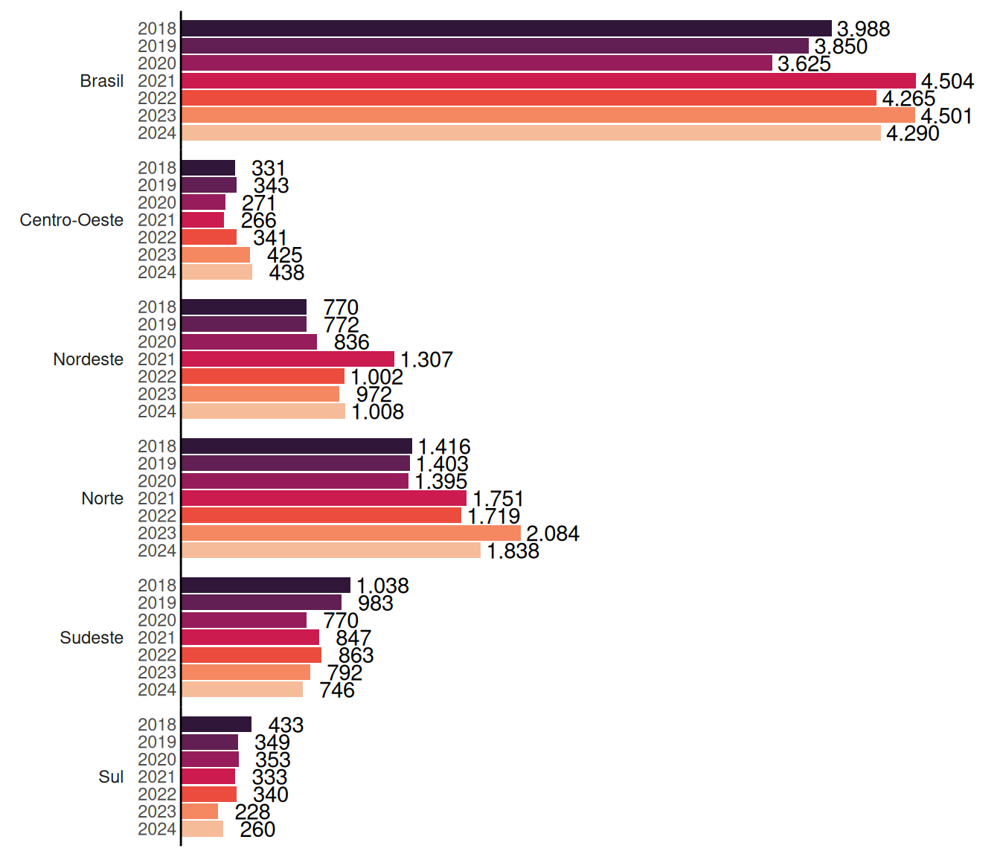
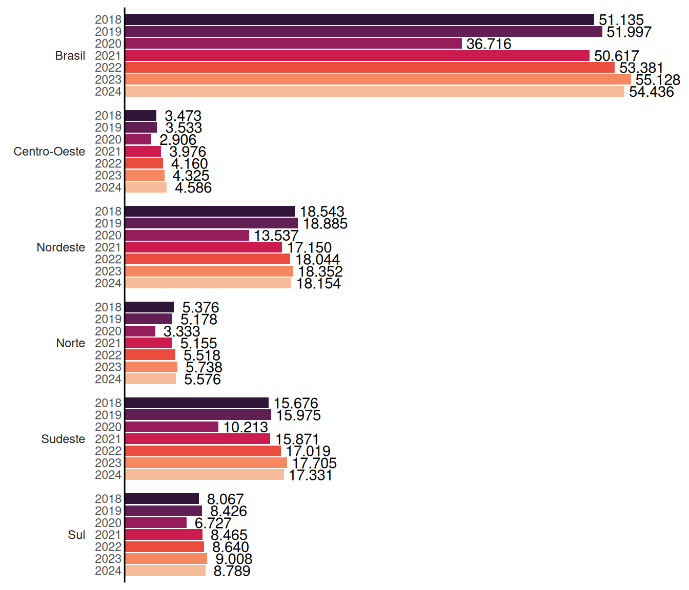
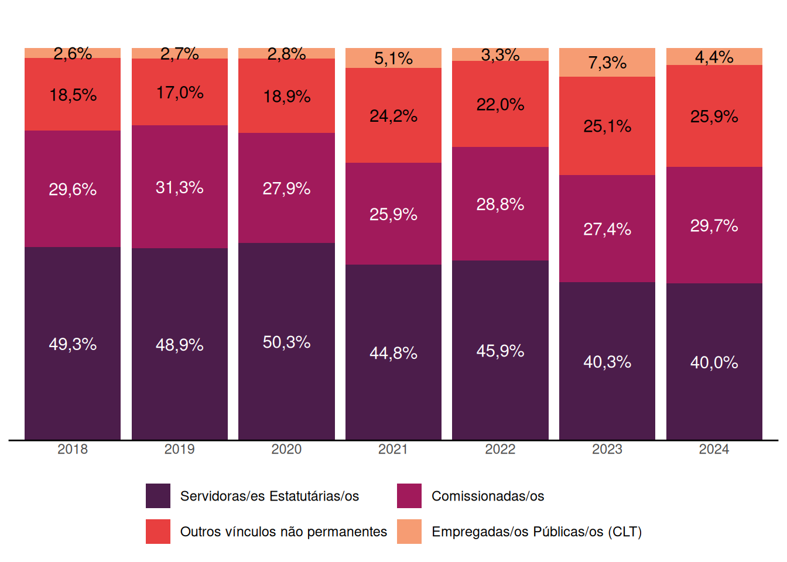
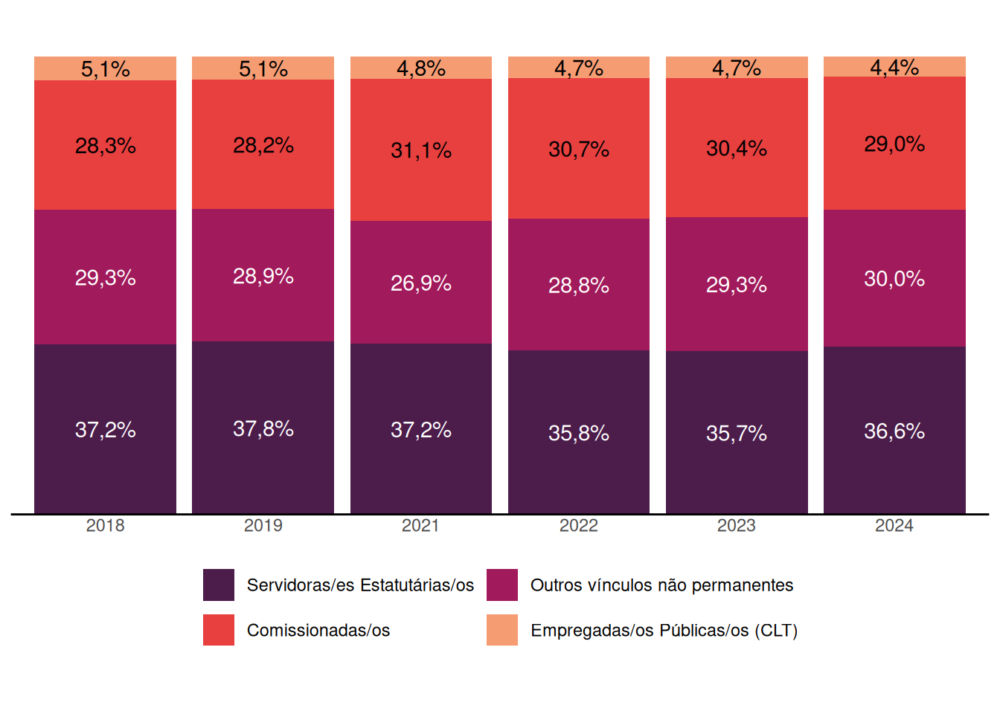
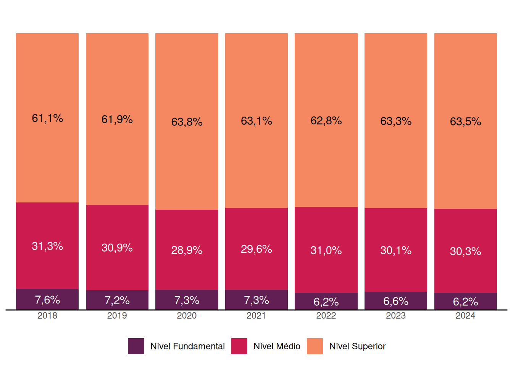
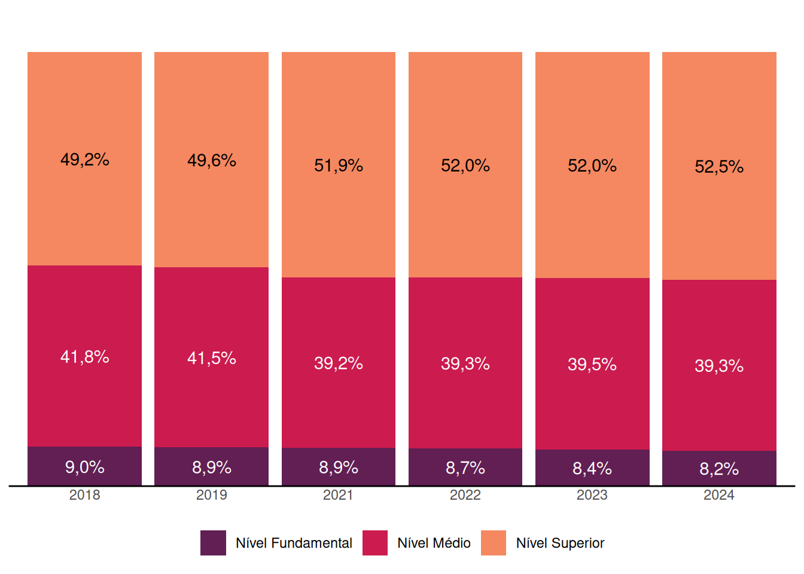
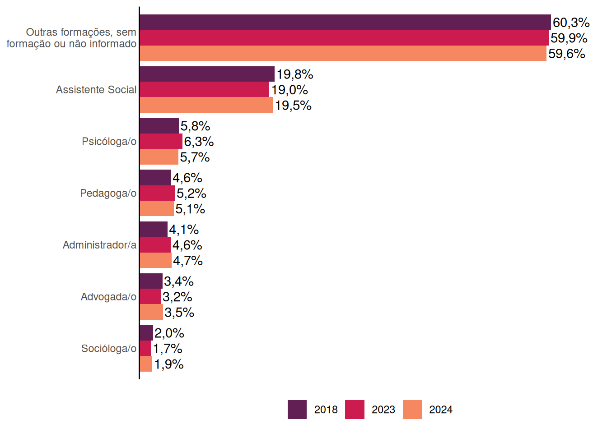
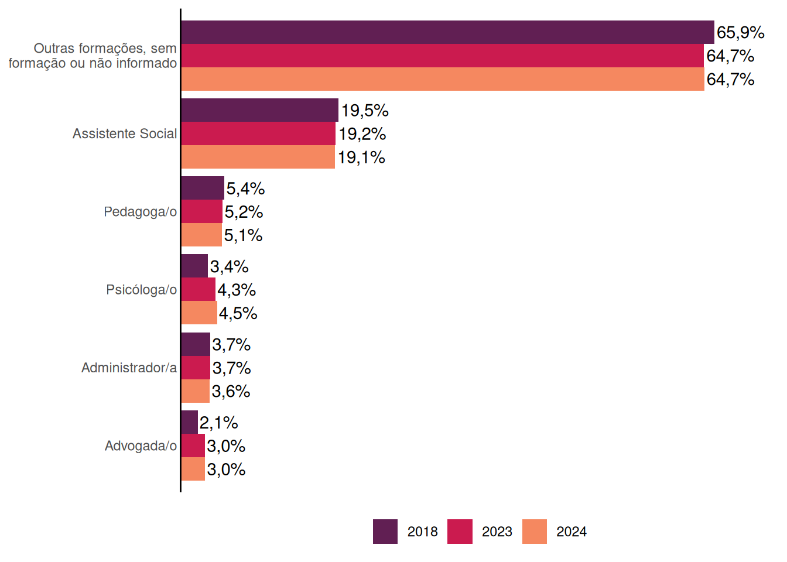
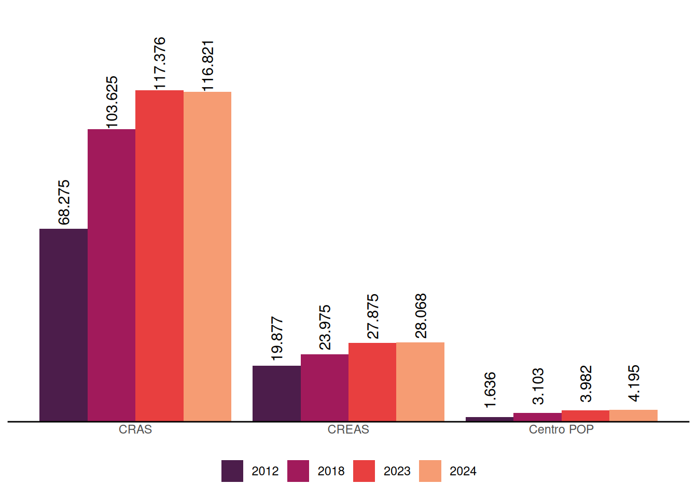
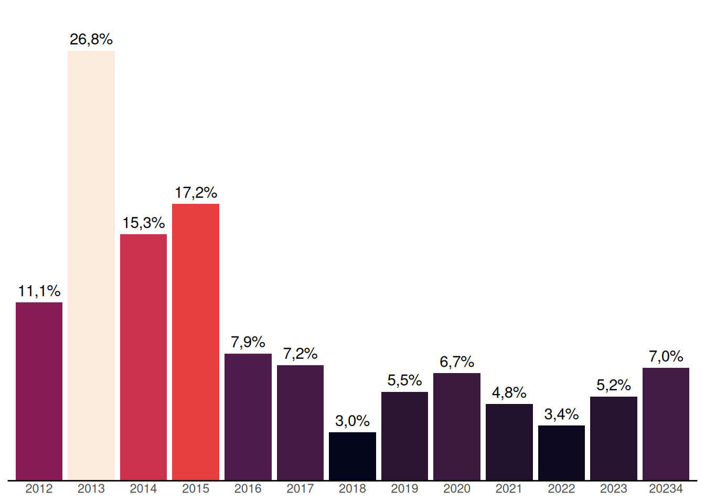

5 Gestão do Trabalho e Recursos Humanos no SUAS
A qualidade da oferta de serviços, programas e benefícios da Assistência Social está diretamente ligada a uma adequada gestão do trabalho no âmbito do SUAS. O dimensionamento das equipes, a capacitação das trabalhadoras e dos trabalhadores e a estruturação das condições de trabalho são fundamentais nesse sentido. Um importante normativo para a gestão do trabalho é a Norma Operacional Básica de Recursos Humanos do SUAS (NOB-RH/SUAS), que traz orientações e diretrizes, além de detalhamentos importantes sobre as equipes de referência, planos de carreira, cargos e salários, cofinanciamento, educação permanente, entre outros aspectos relevantes. A NOB SUAS 2012 em seu Capítulo VIII também trata da Gestão do Trabalho no SUAS no âmbito da União, dos estados, do Distrito Federal e dos municípios.
Este capítulo apresenta um panorama geral da situação das trabalhadoras e dos trabalhadores do SUAS, tanto nas unidades da Assistência Social quanto nas gestões municipais e estaduais, apresentando informações sobre quantitativo, tipo de vínculo trabalhista, escolaridade, entre outros aspectos referentes à gestão do trabalho e sua evolução ao longo dos anos.
5.1 Evolução na quantidade de trabalhadoras e trabalhadores, tipo de vínculo e escolaridade no orgão gestor
Houve uma mudança em 2018 na forma de coleta dos dados das trabalhadoras e trabalhadores nos órgãos gestores. Até 2017 os dados eram coletados de forma agregada (números referentes ao conjunto de trabalhadoras e trabalhadores), e a partir de 2018 passaram a ser coletados dados individuais de cada trabalhadora e trabalhador. Se percebe um impacto significativo dessa mudança nos números obtidos, por isso serão apresentados nesta seção os dados a partir de 2018 apenas, evitando comparações com dados não perfeitamente comparáveis por causa dessa grande diferença na forma de coleta.
A evolução da quantidade de trabalhadoras e trabalhadores nas secretarias estaduais de Assistência Social não apresenta um direcionamento definido de ampliação ou redução a nível nacional, e apresenta direcionamentos diversos em cada Região (Gráfico 5.1). Nacionalmente vemos que a quantidade reduziu de 2018 a 2020, quando chegou ao mínimo registrado na série histórica, de 3.625 trabalhadoras e trabalhadores, e então cresceu do mínimo, em 2020, para o máximo da série histórica, em 2021, com o registro de 4.504 trabalhadoras e trabalhadores. Desde então se mantém em um patamar acima do observado entre 2018 e 2020, oscilando de 4.265 para cima, tendo caído de 4.501, em 2023, para 4.290, em 2024.
Olhando para as grandes regiões separadamente, vemos que no Centro-Oeste registrou-se em 2024 um novo máximo da série histórica, 438 trabalhadoras e trabalhadores, superando o máximo até então, observado em 2023. Já no Nordeste se destaca na série histórica um pico em 2021, de 1.307 trabalhadoras e trabalhadores, seguido nos anos seguintes por quantidades menores, mas em un nível acima do observado entre 2018 e 2020, tendo sido registrado 1.008 trabalhadoras e trabalhadores em 2024. O Norte é a região com a maior quantidade de trabalhadoras e trabalhadores, quantidade que reduziu, em 2024, para 1.838, após o recorde de 2.084 em 2023. O Sudeste vem em uma tendência de redução na quantidade de trabalhadoras e trabalhadores, chegando ao mínimo da série histórica em 2024, com o registro de 746 trabalhadoras e trabalhadores. Finalmente, o Sul é a região atualmente com a menor quantidade de trabalhadoras e trabalhadores nas secretarias estaduais de Assistência Social, e após registrar o mínimo de sua série histórica em 2023, com 228 trabalhadoras e trabalhadores, registrou uma recuperação em 2024, para 260 trabalhadoras e trabalhadores, quantidade ainda abaixo do patamar observado entre 2018 e 2022.
Já na evolução da quantidade de trabalhadoras e trabalhadores nas secretarias municipais de Assistência Social (Gráfico 5.2) vemos uma tendência de crescimento de 2018 a 2023, exceto por uma grande queda em 2020 e exceto pelo Nordeste, que não recuperou após 2020 os níveis dos anos anteriores.
Já em 2024, vemos uma redução na quantidade de trabalhadoras e trabalhadores nas secretarias municipais de Assistência Social, tanto a nivel nacional quanto nas grandes regiões separadamente, exceto no Centro-Oeste, que continuou crescendo e atingiu o nível mais alto da série histórica.

O Gráfico 5.3 mostra os percentuais das trabalhadoras e trabalhadores das secretarias estaduais de Assistência Social segundo o tipo de vínculo. O percentual de servidoras estatutárias e servidores estatutários, após queda significativa de 5,6 pontos percentuais em 2023, caiu mais 0,3 pontos percentuais em 2024, chegando em 40,0%, o menor percentual da série histórica.
O percentual de comissionadas e comissionados tem oscilado ao longo da série histórica entre 25,9% e 31,3%, e após redução em 2023 para 27,4%, subiu em 2024 para 29,7%. O percentual de trabalhadoras e trabalhadores com outros vínculos não permanentes, após atingir o máximo da série em 2023, com 25,1%, subiu mais um pouco em 2024, para 25,9%. Finalmente, o percentual de empregadas públicas e empregados públicos (CLT), após também atingir o máximo em 2023, com 7,3%. recuou em 2024 para 4,4%.

Em relação aos percentuais de tipos de vínculo das trabalhadoras e dos trabalhadores nas secretarias municipais de Assistência Social, Gráfico 5.4, vemos uma relativa estabilidade na distribuição dos percentuais desde 2018. Em 2024, o percentual de servidoras estatutárias e servidores estatutários e o percentual de comissionadas e comissionados oscilou dentro da margem de variação ao longo desses anos. Já o percentual de trabalhadoras e trabalhadores com outros vínculos não permanentes oscilou para cima e foi o maior observado na série hisórica, 30,0%, enquanto o percentual de empregadas públicas e empregados públicos (CLT) oscilou para baixo e foi o menor da série, com 4,4%.

Observa-se uma relativa estabilidade ao longo dos anos na distribuição percentual por nível de escolaridade das trabalhadoras e dos trabalhadores das secretarias estaduais de Assistência Social (Gráfico 5.5). Em 2024 o Censo registrou uma pequena redução de 0,4 pontos percentuais de trabalhadoras e trabalhadores com nível fundamental, de 6,6% para 6,2%, que é o menor percentual da série. Esta redução foi compensada por um aumento de 0,2 pontos percentuais tanto no percentual de trabalhadoras e trabalhadores com nível médio (de 30,1% para 30,3%), quanto no percentual de trabalhadoras e trabalhadores com nível superior (aumento de 63,3% para 63,5%).

Para as trabalhadoras e os trabalhadores nas secretarias municipais observa-se cenário parecido na distribuição dessas trabalhadoras e desses trabalhadores por nível de escolaridade, com uma distribuição relativamente estável ao longo dos anos. Observa-se também uma tendência de aumento do percentual de trabalhadoras e trabalhadores com nível superior, e redução do percentual de trabalhadoras e trabalhadores com nível fundamental (Gráfico 5.6).
No entanto, observa-se uma diferença significativa na distribuição por escolaridade entre as trabalhadoras e os trabalhadores das secretarias estaduais e as trabalhadoreas e os trabalhadores das secretarias municipais: o percentual das trabalhadoras e dos trabalhadores com nível superior nas secretarias estaduais, 63,5% em 2024, é significativamente superior ao percentual dessas trabalhadoras e desses trabalhadores nas secretarias municipais, 52,5% em 2024. A maior parte dessa diferença é compensada nas secreatarias municipais por um maior percentual de trabalhadoras e trabalhadores com nível médio, percentual que foi de 39,3% em 2024 (enquanto nas secretarias estaduais esse percentual foi de 30,3%).

O Gráfico 5.7 mostra os percentuais das áreas de formação mais frequentes das trabalhadoras e dos trabalhadores das secretarias estaduais de Assistência Social. Observa-se pequenas oscilações nesses percentuais, sendo que em 2024 houve pequeno aumento no percentual de assistentes sociais, a formação mais frequente, de 19,0% para 19,5%. Na segunda formação mais frequente, de psicólogas e psicólogos, houve uma redução em 2024 de 6,3% para 5,7%. As outras formações mais frequentes continuaram, com pequenas variações em cada uma, na mesma ordem: pedagogas e pedagogos, administradoras e administradores, advogadas e advogados, e sociólogas e sociólogos.

No Gráfico 5.8, vemos a mesma informação sobre as áreas de formação mais frequentes das trabalhadoras e dos trabalhadores, agora nas secretarias municipais de Assistência Social. Assim como nos estados, a formação mais frequente, de Assistente Social, é quase 1/5 das trabalhadoras e dos trabalhadores, e teve pequena queda em 2024, de 19,2% para 19,1%. A mesma redução de 0,1 pontos percentuais foi registrada na segunda formação mais frequente, a de pedagogas e pedagogos, de 5,2% para 5,1%.
As psicólogas e psicólogos, que são a segunda formação mais frequente nos estados, ocupam a terceira posição nos municípios, mas o percentual desses profissionais vem crescendo e chegou a 4,5% em 2024. Assim como nos estados, as administradoras e administradores são a quarta formação mais frequente nos municípios, mas com um percentual em torno de 1 ponto percentual menor. As advogadas e os advogado também ocupam a mesma posição nos estados e municípios, sendo a quinta formação mais frequente, ambos na casa dos 3%.
Uma grande diferença na formação das trabalhadoras e dos trabalhadores dos municípios para as trabalhadoras e trabalhadores dos estados é que a formação de socióloga e sociólogo, sexta mais frequenta nos estados, não aparece entre as formações mais frequentes nos municípios, e outras 6 formações são mais frequentes nos municípios do que a formação de socióloga e sociólogo (administradora pública ou gestora pública e administrador público ou gestor público, contador e contadora, nutricionista, enfermeira e enfermeiro, profissional de educação física e analista de sistema).

5.2 Evolução da quantidade de trabalhadoras e trabalhadores nas Unidades do SUAS
O Artigo 6º-E da Lei Orgânica de Assistência Social (LOAS) estabelece que os recursos do cofinanciamento do SUAS poderão ser aplicados no pagamento dos profissionais que integrarem as equipes de referência.
O Gráfico 5.9 mostra um crescimento contínuo na quantidade de trabalhadoras e trabalhadores dos CREAS e dos Centros POP, e um recuo em 2024 na quantidade de trabalhadoras e trabalhadores nos CRAS, de 117.376 em 2023 para 116.821 em 2024, um decréscimo de 555 (0,5%) trabalhadoras e trabalhadores. Nos CREAS o número de trabalhadoras e trabalhadores cresceu de 27.875, em 2023, para 28.068, em 2024, um aumento de 193 (0,7%) trabalhadoras e trabalhadores. E nos Centros POP cresceu de 3.982, em 2023, para 4.195, em 2024, ou seja, um adicional de 213 (5,3%) trabalhadoras e trabalhadores nesse equipamento de atendimento à população em situação de rua.

.
5.3 Gestão do trabalho: Concurso público
A gestão do trabalho no SUAS compreende desenhos organizativos, avaliação de desempenho, adequação de perfis profissionais às necessidades das areas administrativas, mesas de negociação, plano de carreira e previsão de consursos públicos.
Em relação à realização de concursos públicos pelos municípios, o Gráfico 5.10 mostra o percentual de municípios que realizaram concurso público para trabalhadoras e trabalhadores de nível superior no SUAS. Vemos entre 2012 e 2015 os maiores percentuais de municípios que realizaram concursos, com um pico de 26,8% dos municípios em 2013. Em 2024 o percentual aumentou em relação a 2023, com 7,0% dos municípios realizando concurso público, maior percentual desde 2017, quanto 7,2% dos municípios realizaram concurso público.
